windows10系统安装
1.制作U盘或DVD安装程序
首先在windows10官网下载U盘安装程序点击 立即下载工具 ；官网网站：https://www.microsoft.com/zh-cn/software-download/windows10
下载完成后，打开软件，等待加载。
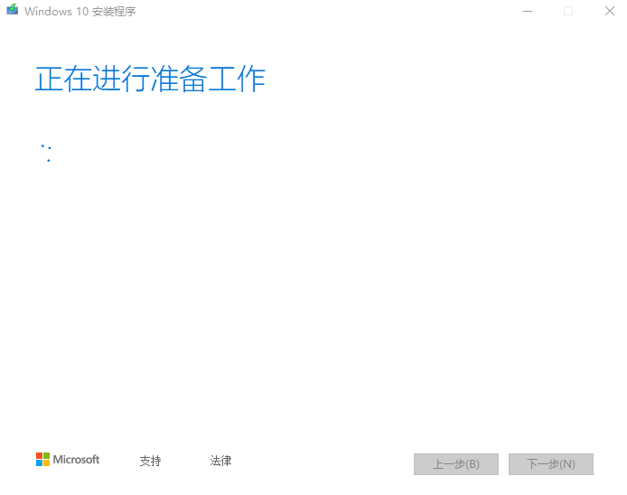加载完时显示，点击下一步。
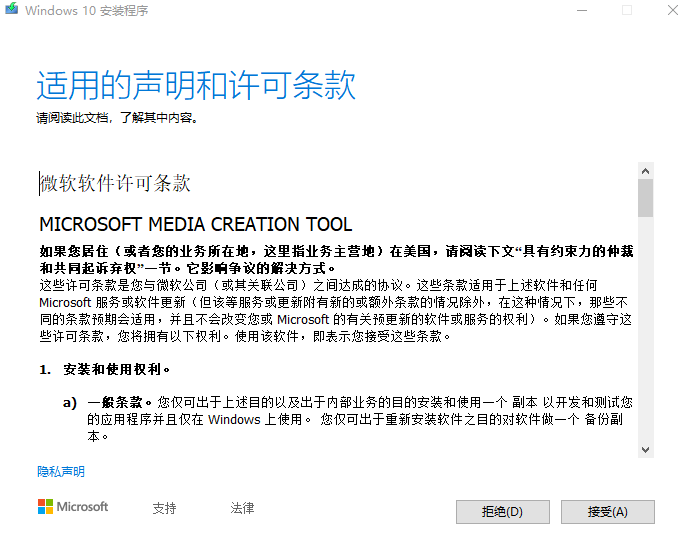等待加载
加载完成显示，如果你需要升级电脑点第一项，如需制作系统安装U盘点第二项，然后点下一步。
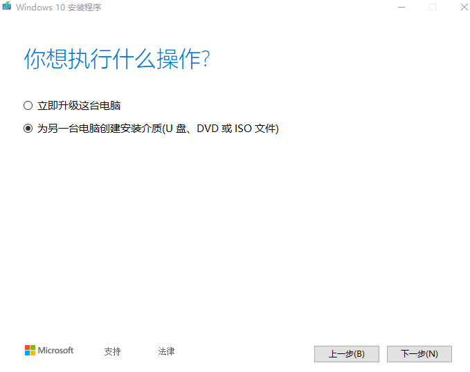再次等待
加载完成时，选择语言版本，体系结构，然后点击下一步。
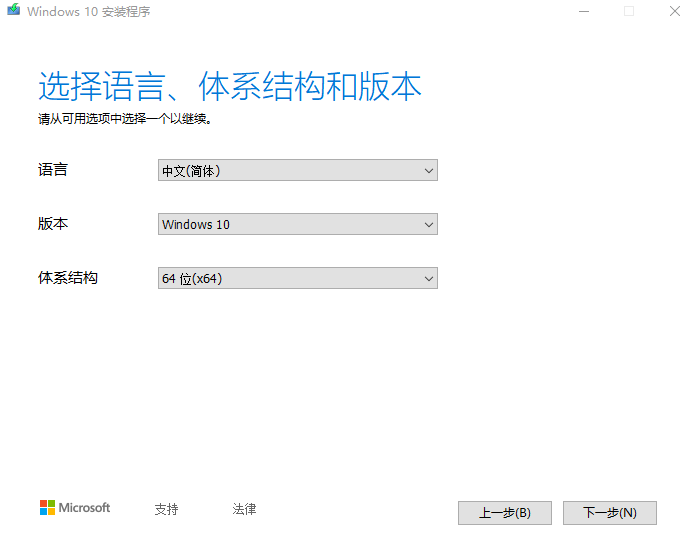又再次等待
加载完时显示，选择U盘，然后点击下一步。
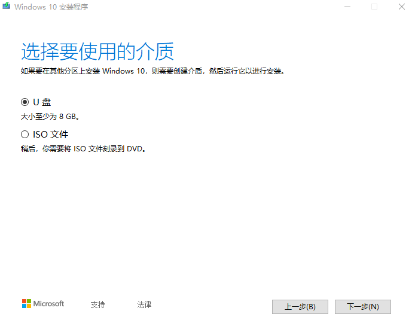等待加载
加载完时显示，选择你要安装的U盘，点击下一步，剩下的都是自动的。
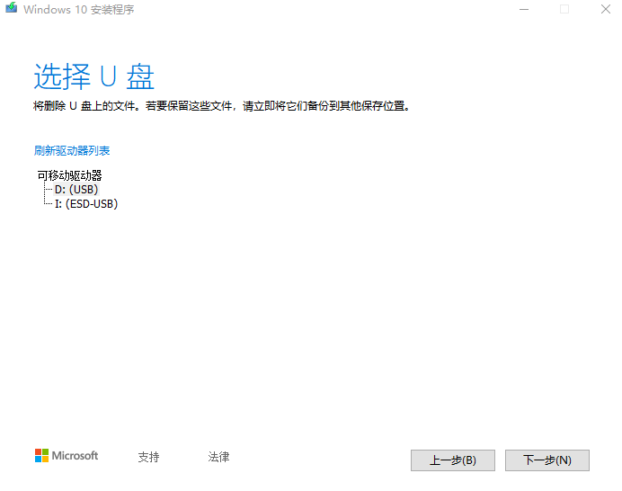2.安装系统
把电脑关机，进入BISO选择系统安装U盘，就是你U盘的商标如我是金士顿（ Kingston）的U盘速度USB2.0，所以选择（Kingston2.0）。
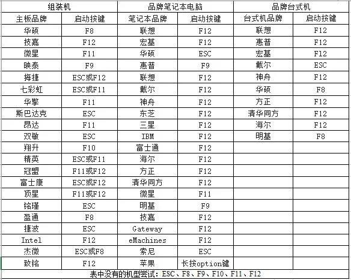进入后如图,选择完后，点击下一步
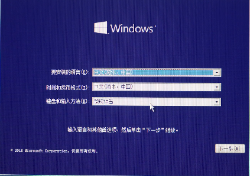点现在安装
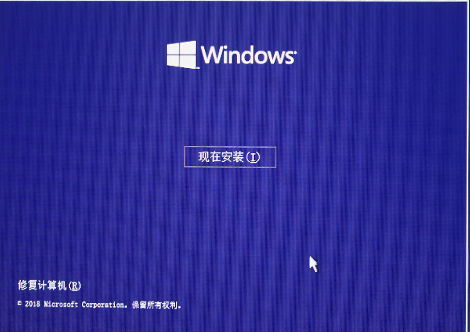点击我没有产品密钥，后面我们还要激活。
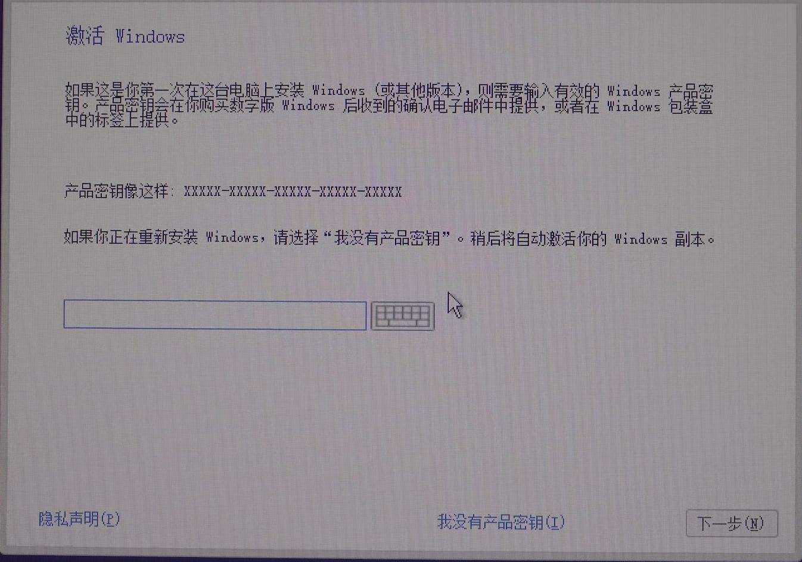选择操作系统，选完点下一步
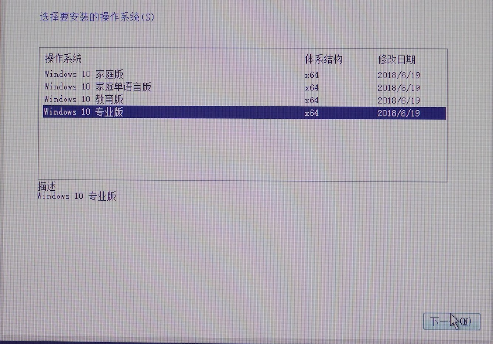勾选（我接受许可条款），勾选完点下一步
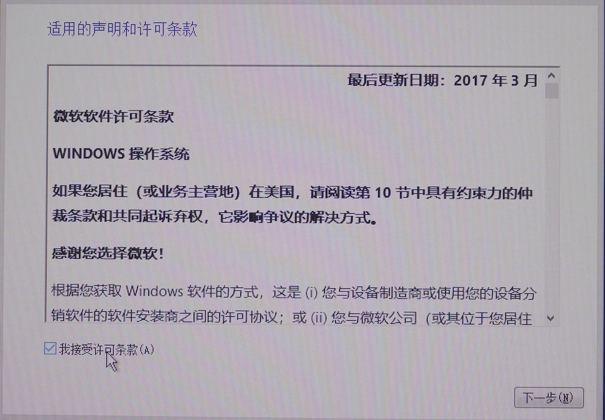选择自定义
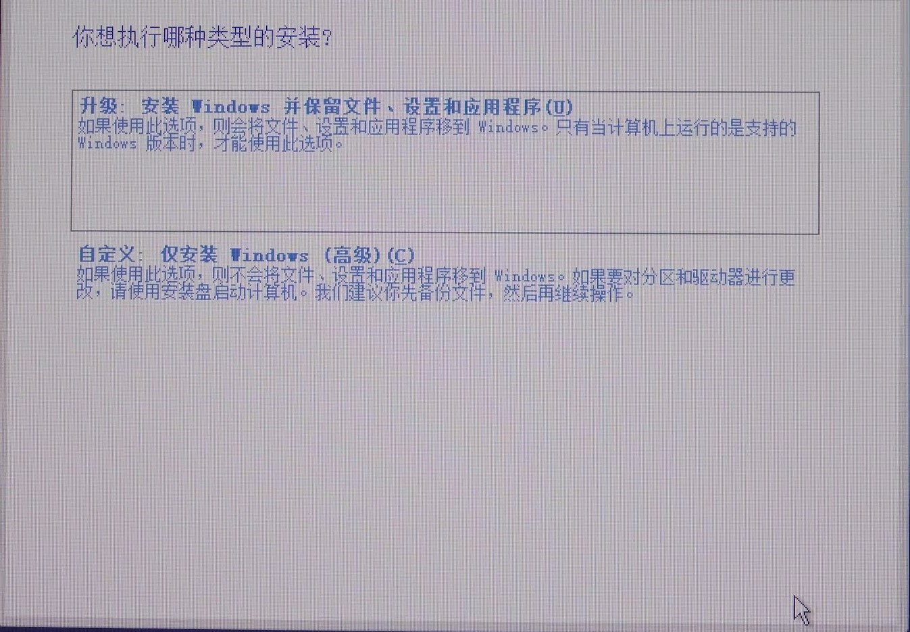选择系统盘（注意：尽量选择容量比较大的[一般120GB就可以了]）然后选择系统盘，点击格式化，在点击下一步
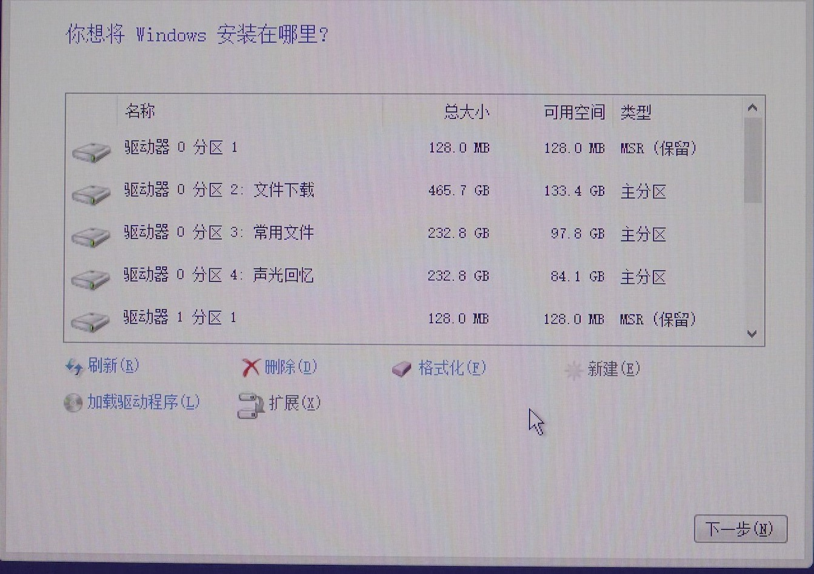静静等待安装完成（图1）【注意除非出现图2不然不能动任何按键（尤其是关机键）】出现图2时按照步骤慢慢选择
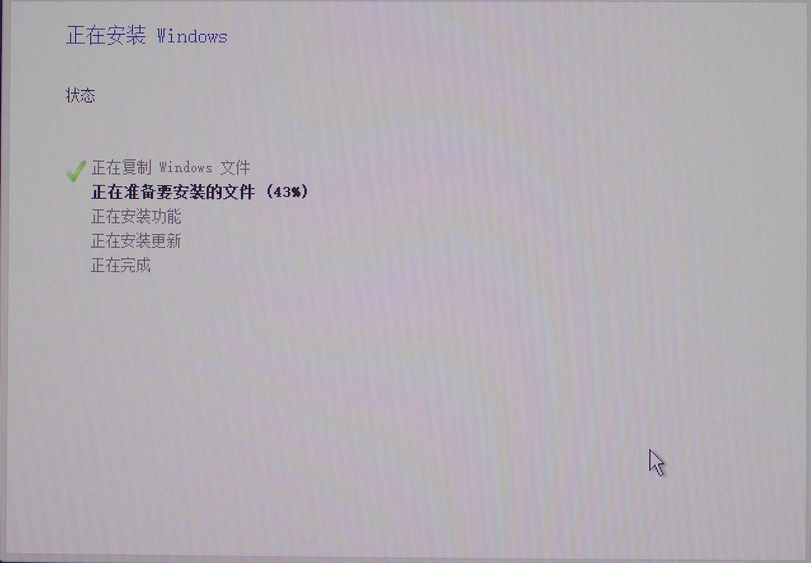图1
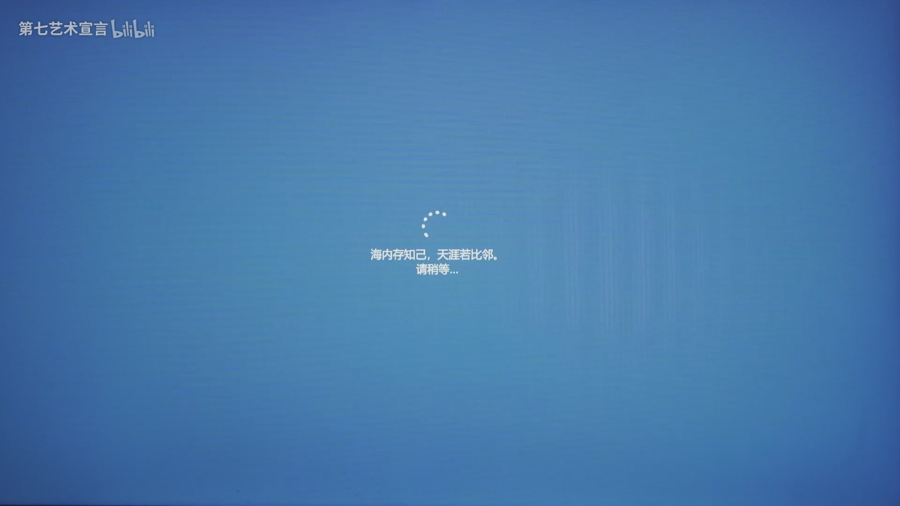图2
安装完成显示

3.激活windows10
首先要关闭windows自带的杀毒软件（我不推荐使用这种方法，推荐去下载第3方杀毒软件如:360安全卫士，腾讯管家等等然后下载激活软件：
KMSAuto百度网盘:链接：https://pan.baidu.com/s/1ZDQu6EHiHqoAXbAmxC6i4A 提取码：ux8x
解压文件软件：2345好压解压缩完成后打开KMSAuto Net 在点击激活即可激活
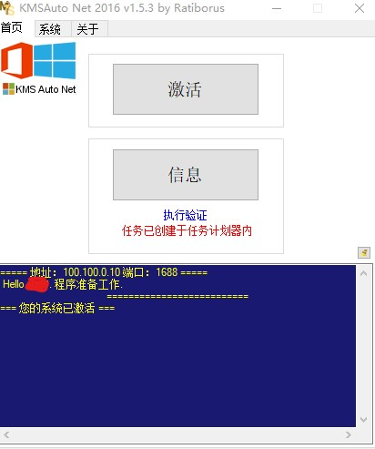